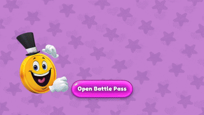

Projects
Bugzonia
Turn-based strategy game with dynamic territory control.

Key Features:
- Modular turn-based system
- Grid-based movement and positioning
- Dynamic territory control mechanics
Technical Contributions:
- Designed and implemented scalable UI systems for mobile and tablet devices
- Created Sprite Atlas workflows to reduce draw calls and improve rendering performance
- Built data-driven systems using Scriptable Objects for unit configuration
- Implemented cross-platform input support for PC and Android
- Optimized memory usage and asset loading for mobile hardware limitations
Technical Focus:
- UI production workflows
- Asset optimization
- Mobile performance
- Scalable content pipelines
- Cross-platform implementation
Challenges:
- Synchronizing multiple unit actions within turn logic
- Balancing territory expansion mechanics
Balloon Fest
Action arcade game with a unique style

Key Features:
- Responsive mobile control system
- Multiple game modes with different objectives
- Reward and progression mechanics
Technical Contributions:
- Implemented responsive UI layouts supporting multiple mobile resolutions
- Created reusable menu and progression interfaces
- Optimized sprite usage and texture management for mobile devices
- Developed modular reward systems configurable through data assets
- Built maintainable workflows for adding new game modes and content
Technical Focus:
- UI implementation
- Content scalability
- Asset management
- Mobile optimization
- Production workflows
Challenges:
- Balancing difficulty across different game modes
- Ensuring responsive and intuitive touch controls
Battlepass Mockup
Production-ready battle pass prototype developed as a Technical Artist challenge. The project focused on UI implementation, scalability, workflow efficiency and content management systems commonly used in live service games.

Key Features:
- Free and Premium reward tracks
- Level progression and XP tracking system
- Reward claiming workflow
- Scrollable and responsive UI layout
- Data-driven content configuration
Technical Implementation:
- Scriptable Object architecture for battle pass content
- Reusable UI components to support future seasons
- Optimized asset management and UI rendering workflow
- Modular progression system separated from presentation layer
- Designed with scalability and maintainability in mind
Research & Design Process:
- Analysis of battle pass implementations from multiple live-service games
- Study of player progression and reward pacing systems
- Evaluation of UX patterns used in modern battle pass interfaces
- Creation of a structure capable of supporting multiple future seasons
Challenges:
- Designing a scalable reward structure without hardcoded dependencies
- Maintaining clean UI organization with a large number of rewards
- Balancing flexibility for designers with technical maintainability
In Development
Egypt Commander
Strategy & troop management set in the ancient Egypt

Key Features:
- AI-driven troop combat and movement
- Procedural map generation system
- Strategic unit management mechanics
Technical Contributions:
- Developed procedural content workflows to support rapid iteration
- Created reusable systems for unit configuration and balancing
- Designed data-driven content structures to reduce production overhead
- Optimized scene organization and content management workflows
- Implemented scalable architecture for future feature expansion
Technical Focus:
- Tool development
- Content pipelines
- Data-driven workflows
- Scalability
- Production efficiency
Challenges:
- Designing flexible AI behaviors for different unit types
- Maintaining balance between randomness and playability in procedural maps
Potion Grabber
Incremental type game set in the medieval age
Key Features:
- Incremental progression and idle mechanics
- Upgrade tree system with scaling effects
- Resource management and economy loop
Technical Contributions:
- Built a fully data-driven progression system using Scriptable Objects
- Designed scalable inventory and upgrade presentation workflows
- Implemented reusable UI components for future content additions
- Created maintainable systems for handling large amounts of progression data
- Optimized content structures to support long-term live balancing
Technical Focus:
- UI architecture
- Content scalability
- Data-driven design
- Workflow optimization
- Live content support
Challenges:
- Balancing exponential growth and progression pacing
- Designing a flexible system for adding new upgrades and effects